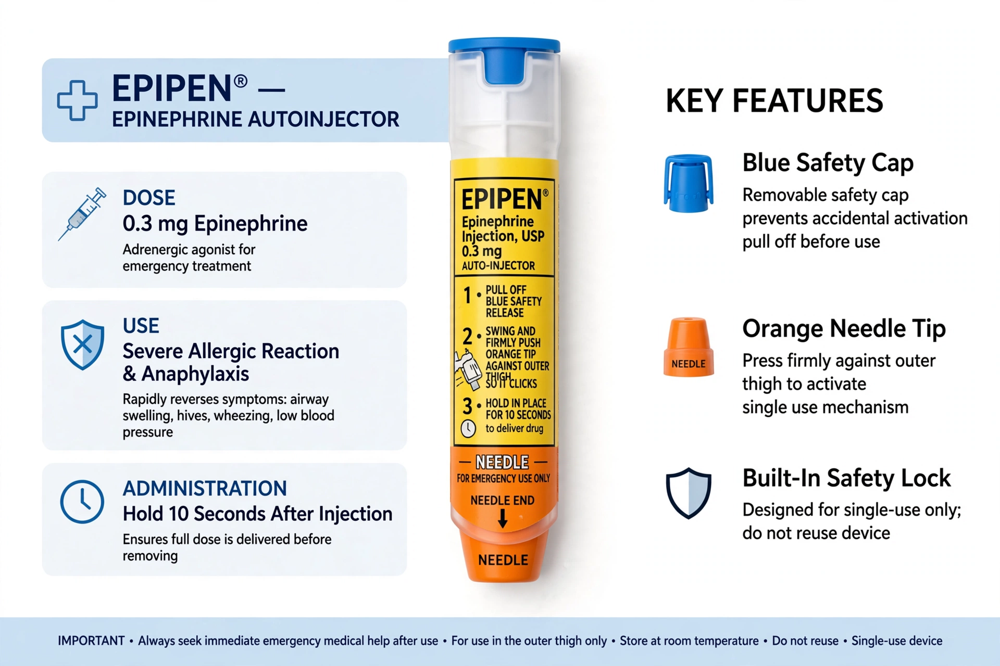

An epinephrine autoinjector (also called adrenaline autoinjector) is a medical device for injecting a measured dose of epinephrine by means of autoinjector technology. It is used for the emergency treatment of anaphylaxis. The best-known brand is the EpiPen; others include Auvi-Q, Adrenaclick and Jext.

| Epinephrine autoinjector | |
|---|---|
| Uses | Anaphylaxis |
| Drug | Epinephrine (adrenaline) |
| Doses | 0.3 mg adult; 0.15 mg junior |
| Route | Intramuscular (outer thigh) |
At the first signs of anaphylaxis — often triggered by foods such as peanut, insect stings, or medicines — the device is pressed firmly against the outer thigh, through clothing if necessary, delivering epinephrine into the vastus lateralis muscle. Emergency services should still be called; a second dose may be given after 5–15 minutes if symptoms persist.
Epinephrine constricts blood vessels, relaxes airway smooth muscle, reduces swelling and stimulates the heart, reversing the life-threatening features of anaphylaxis. Antihistamines are not a substitute.
Autoinjector technology derived from military nerve-agent antidote kits (ComboPen). The EpiPen was approved in the US in 1987. Pricing controversies, notably Mylan's price rises to over $600 for a two-pack by 2016, spurred generic competition and policy debate.